class: middle, center # itch.io @ The Godot GDC Meetup <img src="itchio-logo.png" width="50%" /> [https://itch.io](https://itch.io) · [@itchio](https://twitter.com/itchio) March 22, 2018 --- # Hi <img style="float: left; margin-right: 1em;" src="leafo.png" alt="" width="15%" /> My name is Leaf Corcoran. <div style="clear:both"></div> * https://leafo.itch.io * https://github.com/leafo * https://twitter.com/moonscript * https://leafo.net ??? Here are some places where you might see me on the internet --- class: center, middle ## I'm the founder of itch.io --- class: center, middle ## Some backstory? --- class: center, middle ??? Maybe a similar story to many of you, when I was younger I loved to play some games. And then I thought I should try to make games. --- class: center, middle ??? I soon realized it is very difficult to make games, after trying to get through through a C++ book my dad bought for me. --- class: center, middle <img src="rpgmaker.jpg" style="width: 60%" alt="" /> ??? I abandoned that, relegating myself to RPG Maker for a bit, but ending up on learning on how to build websites. Of course at this point on 14 years old, but it sets the stage. --- class: center, middle <img src="phplogo.png" style="width: 80%" alt="" /> ??? ... learning to build websites --- class: center, middle --- class: center, middle <div style="display: flex; align-items: center; justify-content: center;"> <img src="ld1.gif" style="display: block; width: 38%" alt="" /> <div> 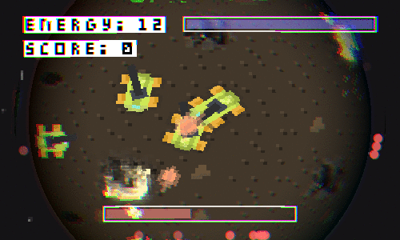 <img src="ld4.gif" style="display: inline-block; width: 50%; " alt="" /> <img src="ld3.gif" style="display: inline-block; width: 45%; " alt="" /> </div> </div> --- class: center, middle 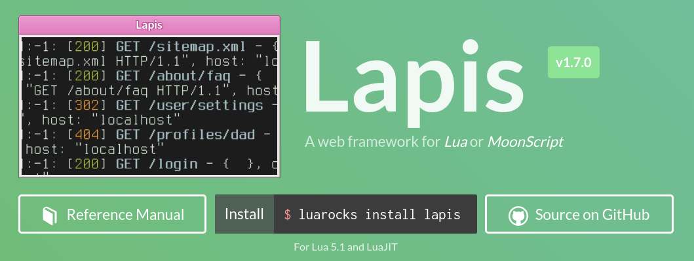 --- class: center, middle 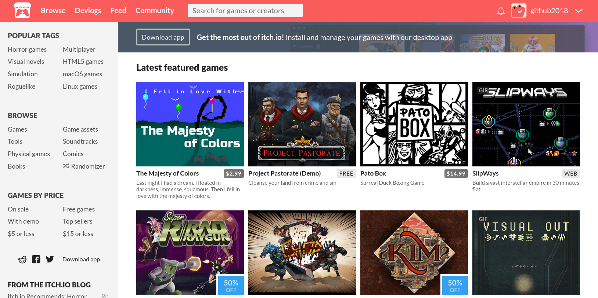 --- class: center, middle 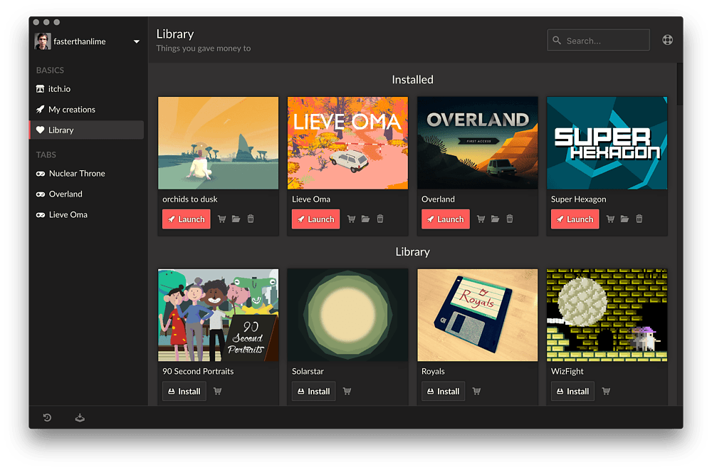 --- class: center, middle # 5 years of itch.io And we just passed 100k games! --- class: center, middle # itch.io & Godot --- class: center, middle # Disclaimer --- class: center, middle # Disclaimer I'm a Godot beginner. ??? I'm a Godot beginner. I'm looking forward to using it on my next Ludum Dare project. --- class: center, middle # Disclaimer But please ask me about distribution. ??? Feel free to ask me questions about deploying and publishing your game, but I still might get a little mixed up about the Project Settings dialog. --- class: center, middle # Also... --- class: center, middle ## When I say "games" I really mean any digital thing. <img src="content-types.png" alt="" /> --- class: center, middle # Publishing your game ??? Generally we build games so we can have other people play them. itch.io is a platform for independent developers to distribute their work so I think we have a good match. --- class: center, middle # TL;DR: it's easy ??? So if you've used itch.io, you're probably familiar with many of these things. But sometimes hearing things you already know gives you new ideas for things to try in the future. --- # At a glance * Publishing == free * itch.io makes money through revenue share --- class: center, middle --- # At a glance * Publishing == free * itch.io makes money through revenue share * Most games are free (about 80% free, 20% paid) --- # At a glance * Publishing == free * itch.io makes money through revenue share * Most games are free (about 80% free, 20% paid) * Everything is "Pay what you want" * Games for free can take donations * Premium games can get tips * Our philosophy is developers first --- class: center, middle ## A self-service dashboard ??? Everything is self service. Dashboard offers rich set of features an analytics to customize your launch. This is where you host sales, bundles, upload screenshots, your builds, trailers, & tell us what your game is, etc. --- class: center, middle ## Deploying your game --- class: center, middle ## Two kinds of projects --- class: middle ## Two kinds of projects (relevant to Godot) * Downloadable * Linux, Windows, MacOS, Android * HTML5 ??? These can be combined, so you can embed a demo in your project page and provide downloads for a full, higher performance, experience. These correspond to the HTML, individual operating system export templates. --- class: middle # Briefly about mobile --- class: middle # Briefly about mobile * Upload APK files directly * Not the greatest UX, but it's there * Mobile HTML games --- class: center, middle # HTML 5 Games ??? You're going to hear the word easy a lot! HTML5 is easy. It's a good candidate for games that don't have high performance requirements. Games can be loaded directly into modern browser (Firefox, Chrome). --- # HTML5 Games * Upload a `zip` file containing all your game's resources. * We extract it and put the `index.html` file in an `iframe` --- class: center ## Exporting with default settings works great <video width="80%" loop onclick='this.play()'> <source src="godot_html_export.mp4" type="video/mp4"> </video> --- # HTML5 Games * Upload a `zip` file containing all your game's resources. * We extract it and put the `index.html` file in an `iframe` * **Recommended:** Export your game to new directory, name it `index` * Export it → Zip it → Upload it * Doesn't matter if `index.html` is nested --- # HTML5 Games: Viewport --- # HTML5 Games: Viewport Test width & height are what your game's dimensions will be.<br>Plug them into itch.io. --- # HTML5 Games: Viewport * Test width & height are initial game dimensions * **Recommended:** Make your window resizable * Use `OS.set_window_maximized` to make your game take up the available area --- # Maximize your game Use this script to maximize the game within the `iframe` ```gdscript func _ready(): if OS.get_name() == "HTML5": OS.set_window_maximized(true) ``` Source: https://github.com/godotengine/godot/issues/17161 üëç Works well with itch.io's built in fullscreen button --- class: center, middle --- class: center, middle --- class: center, middle # Downloadable Games --- # Downloadable Games * Godot makes cross-platform builds simple, take advantage of it * itch.io has strong Windows, Linux, and MacOS communities --- class: center, middle ??? Linux is beating out MacOS here, which is cool --- # Downloadable Games * Godot makes cross-platform builds simple, take advantage of it * itch.io has strong Windows, Linux, and MacOS communities * Our app will figure out how to run your game * Godot games are standalone, they will execute by default --- # Downloadable Games: App manifest Create `.itch.toml` at top level of game directory ```toml [[actions]] name = "play" path = "FooBar.exe" [[actions]] name = "editor" path = "FooBar.exe" args = ["--editor"] ``` More info: https://itch.io/docs/itch/integrating/manifest.html --- # Downloadable Games * Godot makes cross-platform builds simple, take advantage of it * itch.io has strong Windows, Linux, and MacOS communities * Our app will figure out how to run your game * Godot games are standalone, they will execute by default * You can customize launching with `.itch.toml` * Your manifest can specify prerequisites for Windows * Visual C++ Runtime, .NET Framework * You can opt into the itch.io sandbox --- class: center, middle # itch.io API --- # Downloadable Games: API access * API is HTTP based, in Godot you will use `HTTPClient` or `HTTPRequest` --- # Downloadable Games: API access * API is HTTP based, in Godot you will use `HTTPClient` or `HTTPRequest` * Use the API to see who is playing your game * You can check that they own it, if you want DRM * Simple now, but will be more complex in the near future * Note: API keys timeout, make sure to renew them --- # Downloadable Games: API access App will automatically give you an API key connecting your game, and the developer's account. Request it with `scope`: ```toml [[actions]] name = "play" path = "FooBar.exe" scope = "profile:me" ``` Learn more: <https://itch.io/docs/itch/integrating/api/> --- # Downloadable Games: API access API key is handed to game via environment variable * `ITCHIO_API_KEY`: the API key * `ITCHIO_API_KEY_EXPIRES_AT`: Expiration date --- ```gdscript extends Node func _ready(): var api_key = OS.get_environment("ITCHIO_API_KEY") var http = HTTPClient.new() # Use HTTPS and verify host! http.connect_to_host("itch.io", -1, true, true) while http.get_status() == HTTPClient.STATUS_CONNECTING or http.get_status() == HTTPClient.STATUS_RESOLVING: http.poll() OS.delay_msec(500) err = http.request(HTTPClient.METHOD_GET, "/api/1/jwt/me", [ "Host: itch.io", "Authorization: " + api_key ]) ## read the body... ``` --- # Downloadable Games: API access * `HTTPRequest` node should work too * TODO: We will write a library for you to use :) * HTML5 games launched through the app have slightly different interface * See the docs: <https://itch.io/docs/itch/integrating/manifest.html> --- class: center, middle # Incremental Updates With Patching --- # Butler is our command line tool * Open source: <https://github.com/itchio/butler> * Point it at your extracted game directory, it figures out what you changed * Updates are efficient: <https://amos.me/blog/2017/efficient-game-updates/> * Combination of rsync and bsdiff algorithms --- # Butler: Good for developers and players * Uploads are resilient to bad internet, resumable * Only a patch needs to be uploaded * Only a patch needs to be downloaded * App users get resumable downloads ### One command to deploy ```bash butler push directory user/game:channel ``` --- class: center, middle A simple code change yields a small patch: ```bash 18 KiB patch (99.93% savings) ``` --- class: center, middle # Maximizing your launch --- # It's a tough market * Launching a new indie game is hard * We know that * itch.io has over 200 new game pages created each day * We want to help you get visibility -- ## Take advantage of your audience * If you have an audience, use it * If you don't have an audience, start making one * Twitter, Reddit, Discord, Twitch, etc. --- # How itch.io gives you visibility * Homepage: curated by us * Featured games, fresh games * Browse (filter by tags, platforms, genres, etc.) * Collections, recommendations * The feed -- ## Sorting games * We sort games by a *popularity* metric * The first two weeks is when it's easy to rise. * When you launch your game tell people about it! --- # Use your analytics * Use game analytics to find where your visitors are coming from * Discover communities talking about your game and engage with them * An `itch.io` referrer from another game means people are finding your game through cross-game recommendations --- # Engage with community * Encourage people to follow your account * New projects you publish are emailed to your followers * Encourage people to add your game to a collection * If your game goes on sale, they'll be notified * Message boards and comments can be added to your pages * Using a message board? Add initial topics to prompt people to participate * YouTube streamers love to post video replies in comments * Use devlogs to re-engage with a game that is in development --- # Classify your project * A lot of itch.io is optional, but that doesn't mean you shouldn't do it * Add tags, genre * Use tool classification * Add languages, accessibility, controller support, etc. * Add a demo for paid games --- class: center, middle # The more you classify<br>the more you show up Browse pages account for 80% of<br> game impressions on all of itch.io --- class: middle, center # Classify your project 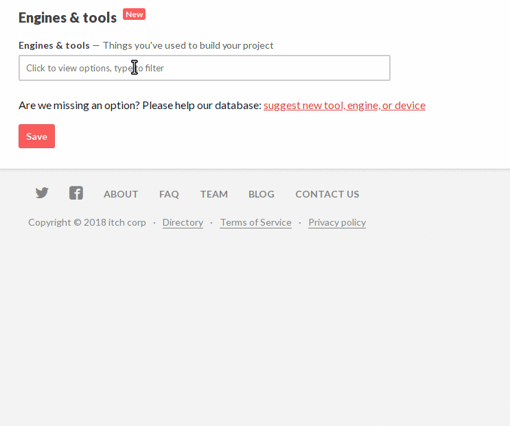 --- 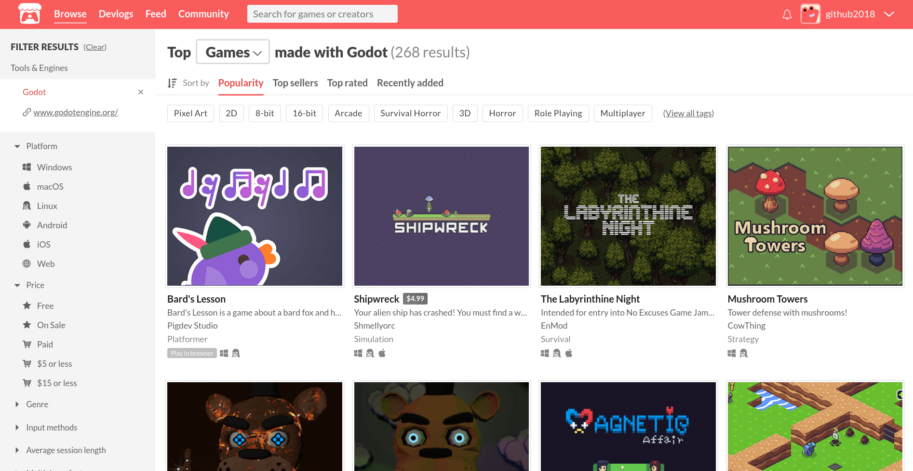 --- class: middle, center # Customize your page --- class: middle, center 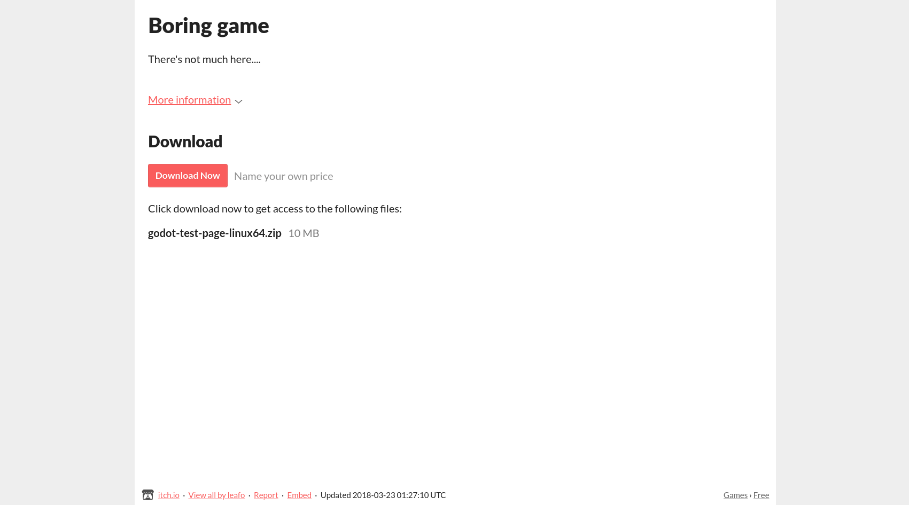 --- class: middle, center 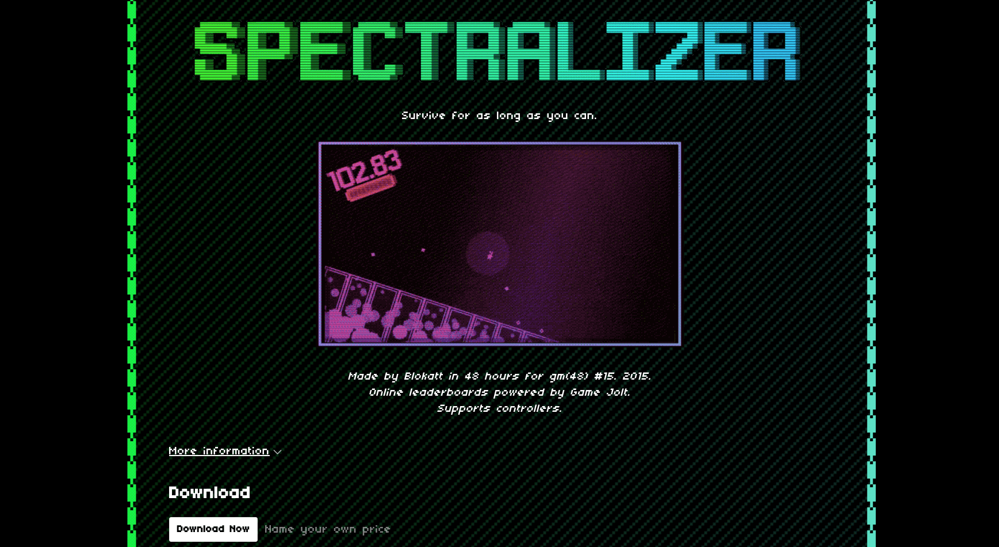 --- class: middle, center 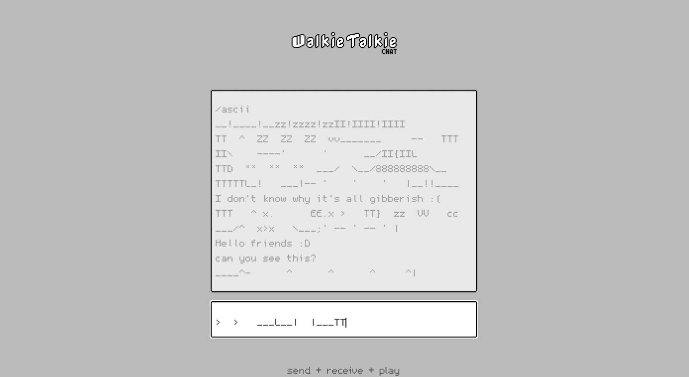 --- class: middle, center 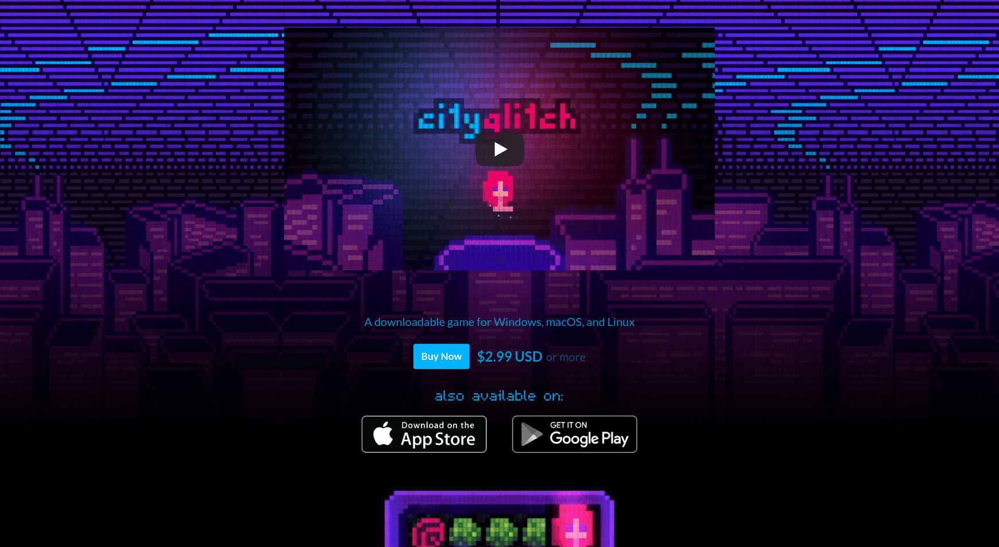 --- class: middle, center 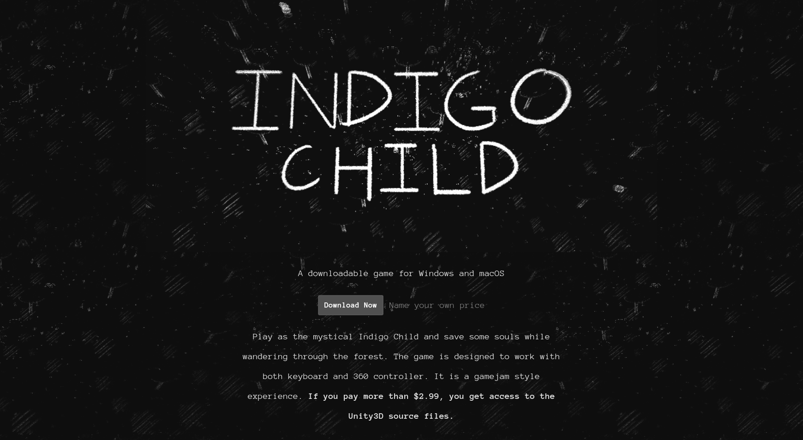 --- # Help us help you * We love to feature pages that show effort * Post on our community to announce your launch * <https://itch.io/board/10022/release-announcements> * If you need help or advice, contact us --- class: center # Other ways to get involved 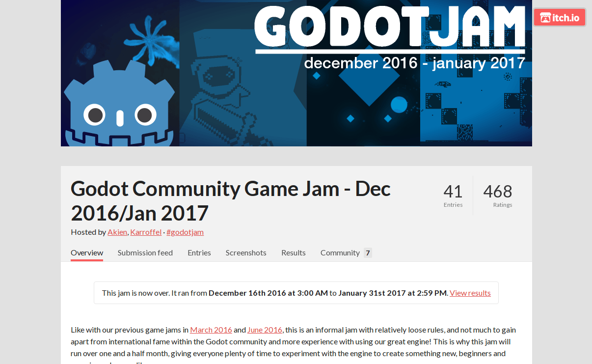 --- class: center # Other ways to get involved 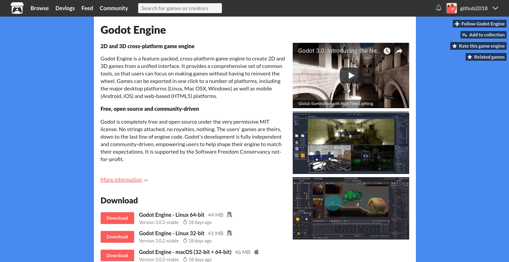 --- class: middle, center # Thank you <img src="itchio-logo.png" width="50%" /> [https://itch.io](https://itch.io) · [@itchio](https://twitter.com/itchio) ### Questions? Ask me on Twitter, itch.io forums, our Discord, or here! Me: [@moonscript](https://twitter.com/moonscript)